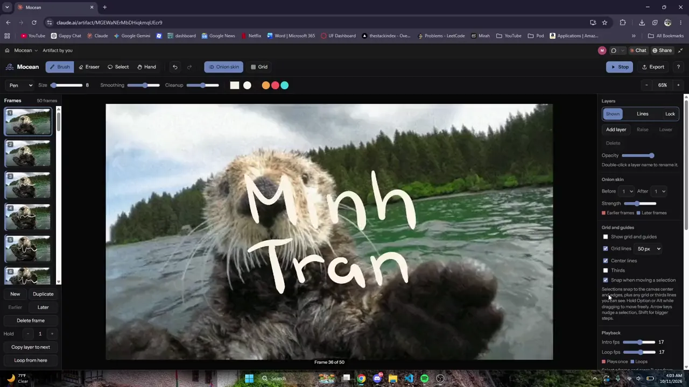

Mocean
idea came from my baby sister
A frame-by-frame animation app in the browser, with onion skinning, layers, pressure brushes, and GIF or video rotoscoping. It exports straight to the web. Named for motion and the ocean: I built it to animate over a sea otter.
mocean-frames.pages.dev